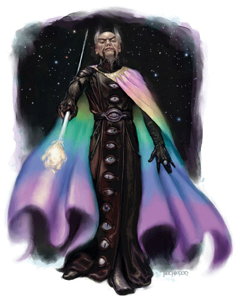

大法师是FR背景提供的一种进阶职业。要成为大法师，角色必须满足以下条件：
施法能力：施放7级奥术的能力，至少掌握不少于五个学派的五级以上的法术
技能要求：知识（奥术）15 ranks+，法术辩识 15 ranks+
专长要求：技能专攻（法术辩识）、法术专攻（至少两个学派）
生命骰：d4。
职业技能：炼金术、专注、知识（所有种类）、专业、占卜、搜索、法术辩识。（madcatclan译注：奇怪的是职业技能中居然没有手艺，倒有了个搜索）
每一级大法师能得到 2+INT MOD个技能点。
职业能力：
装甲熟练(Weapon and Armor Proficiency）：
大法师不会令角色获得任何额外的武器和盔甲熟练。
施法次数（Spells per Day）：
当角色的大法师职业等级提升时，角色会获得新的施法次数,就如同他的奥术施法者等级被提升了一样。角色可以把大法师等级加到原本的奥术施法职业的施法等级中以提高有效的施法者等级。但角色原本职业的其他特性并不会因此而得到提升，例如专长、豁免、技能等等。也就是说一名Lv18的法师/Lv1的大法师在施展法术时按一个19级的法师计算。
如果角色在成为本进阶职业前有多个奥术施法职业等级的话，角色每次提升大法师职业等级时必须要决定把获得的施法等级加到哪一个职业上。
高等奥术能力High Arcana
大法师掌握了一般普通法师或巫师所不知道的秘密的知识。他能通过永久消除一个法术记忆位来产生特殊的能力。举例来说，一个Lv15的法师能施放两个七级奥术（这里及以下均不考虑智力修正），而一个Lv13法师/Lv2大法师为了得到特殊的能力而失去了一个七级施法位，他每天只能施放一个七级奥术。
大法师也能通过永久失去比要求更高的施法位来取得更强的特殊能力，只要他愿意。
以下为大法师的特殊能力：
奥火（Arcane Fire），超自然能力SU：
大法师可以将一个准备好的奥术的能量转换为奥火，这种不经加工的原始法术能量看上去象一支能量矢（madcatclan译注：比如说我们都熟悉的麦尔夫酸箭）。奥火是一种远程接触攻击，射程为400+40英尺/每个大法师等级，造成的伤害值是：1d6/每个大法师等级＋1d6/被转换的奥术等级。例如，一个5级大法师将其准备好的一个7级法术转换为奥火，那么命中的伤害就是12d6。掌握奥火的代价是永久失去一个九级施法位。
奥术之手（Arcane Reach）：
大法师能在30英尺内使用接触法术（如电爪术）进行接触攻击（接触命中判定仍按正常接触攻击判定进行）。多次选择这个此特殊能力，效果可以累积（选择二次就是60英尺内可以接触攻击）。掌握奥术之手的代价是永久失去一个七级施法位。
魔法反制（Mastery of Counterspelling）：
当大法师成功地进行了法术压制（PHB第十章）的判定后，任何针对法师的单体攻击法术将立即作用到施法者身上，就象被Spell turning成功反射了一样。如果施放的法术是无法转向的（例如范围作用法术），那么这个法术的效果只能被正常压制，而无法将其反射回去。掌握魔法反制的代价是永久失去一个七级施法位。
元素掌控（Mastery of Elements）：
大法师可以把奥术由一种元素转变为另一种，比如说，她可以令火球术造成声系伤害，而不是原来的火系伤害（这样做的话同时也失去了火的特性，比如说熔化范围内所有低熔点金属）。
大法师进行元素转化的范围只有五种，即火、电、寒、酸与声。被转化的奥术的施法时间不受影响。施法者必须在开始施法前指定这个奥术的元素种类。掌握元素掌控的代价是永久失去一个八级施法位。
外形掌控（Mastery of Shaping）：
大法师可以让法术的作用空间变形成以下几种：Burst、Cone、Cylinder、Emanation、Spread。大法师还可以使用此特殊能力，在法术的作用空间中创建出一个不受此法术影响的安全区。这个安全区的最小体积是5英尺边长的立方体。例如，法师可施放一个火球术攻击敌人，却在火球的爆散范围内留出一个空洞使同样处在火球作用范围内的同伴不会受伤。而且，外形掌控的能力可以将法术作用最小空间从10英尺降至5英尺。掌握外形掌控的代价是永久失去一个六级施法位。
法力强效+1（Spell Power+1）：
这个特殊能力提升了对抗大法师施放的奥术的豁免检定DC+1，并且使大法师使用奥术穿透目标法术抗力的检定修正+1。此特殊能力只能选择一次，并且可以和其他效果（例如法力强效+2、法力强效+3）进行叠加，也能和其他专长进行叠加。这个特殊能力来自于红袍法师会的研究成果，掌握法力强效+1的代价是永久失去一个五级施法位。
法力强效+2（Spell Power+2）：
这个特殊能力和法力强效+1是一样的，除了提升了对抗大法师施放的奥术的豁免检定DC+2，并且使大法师使用奥术穿透目标法术抗力的检定修正+2。此特殊能力只能选择一次，并且可以和其他效果（例如法力强效+1、法力强效+3）进行叠加，也能和其他专长进行叠加。掌握法力强效+2的代价是永久失去一个七级施法位。
法力强效+3（Spell Power+3）：
这个特殊能力和法力强效+1是一样的，除了提升了对抗大法师施放的奥术的豁免检定DC+3，并且使大法师使用奥术穿透目标法术抗力的检定修正+3。此特殊能力只能选择一次，并且可以和其他效果（例如法力强效+1、法力强效+2）进行叠加，也能和其他专长进行叠加。掌握法力强效+3的代价是永久失去一个九级施法位。
类法术能力（Spell-Like Ability）：
大法师可以在他的一个空着的法术位上永恒地存储某一特定法术，并将它变成类法术能力。这个类法术能力每天可使用2次。在施放这个类法术能力时，大法师无需任何材料，但若是这个法术中包含有材料成分，每施放一次，大法师将失去10×材料价格（GP）的经验值。掌握类法术能力的代价是永久失去一个五级施法位。
类法术能力通常占用同级的法术位，但有时大法师也可以选择其他法术位以存储一些被超魔专长强化过的奥术。例如，闪电术是一个3级法术，当大法师决定将它转变为类法术能力时，他必须用一个3级法术位永恒存储它。但若他决定存储一个极效（Maximized）的闪电箭，它的等级就变为了6级，于是法师就必须使用6级法术位存储它。
大法师也可以选择用高等级法术位存储低等级法术，从而增加类法术能力的使用次数。用高3级的法术位存储的类法术能力每天可使用4次；高6级的法术位存储的类法术能力每天可使用6次。例如，一个大法师使用一个9级的法术位永久存储火球术并转成类法术能力，从而每天就可使用SP：火球术6次。
当多次选择这个特殊能力时，角色可以继续再次转化一个法术（可以是已经选择过的，也可以是未选择过的奥术）。
附：
职业等级 基本命中加值 坚韧／反射／意志 奖励 施法次数
1st +0 +0/+0/+2 选择一个特殊能力 现有奥术施法等级+1
2nd +1 +0/+0/+3 选择一个特殊能力 现有奥术施法等级+1
3rd +1 +1/+1/+3 选择一个特殊能力 现有奥术施法等级+1
4th +2 +1/+1/+4 选择一个特殊能力 现有奥术施法等级+1
5th +2 +1/+1/+4 选择一个特殊能力 现有奥术施法等级+1